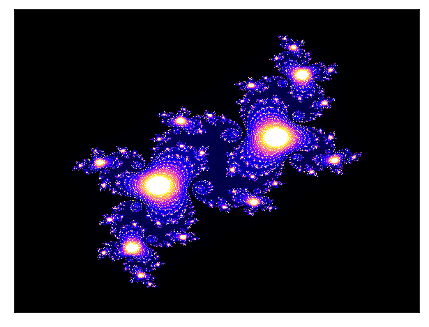
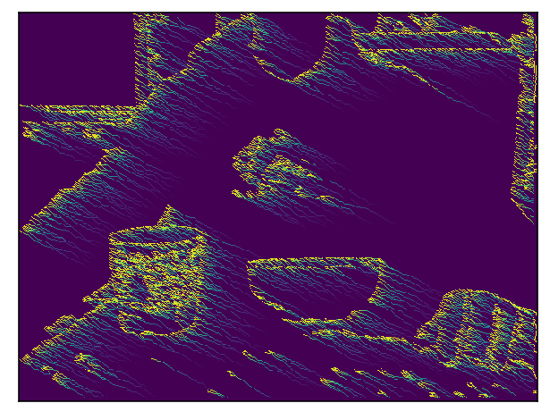

Image manipulation and fractals
Here I capture a webcam image, test out pixel manipulation, generate some fractals and attempt to blend the results.
import io
import time
import cv2
import random
import numpy as np
import pandas as pd
import matplotlib.pyplot as plt
import matplotlib.cm as cm
from matplotlib import colors
from numba import jit
from PIL import Image
%matplotlib inline
%config InlineBackend.figure_format = 'retina'
Capture an image with OpenCV
cam = cv2.VideoCapture(0)
ret, frame = cam.read()
cam.release()
cv2.destroyAllWindows()
Display the image with matplotlib
plt.xticks([]), plt.yticks([])
plt.imshow(frame);
The image comes out blue looking because opencv use's BGR and matplotlib uses RGB, lets convert it. (opencv has it's own .imshow but we'll be using matplotlib further down)
frame2 = cv2.cvtColor(frame, cv2.COLOR_BGR2RGB)
plt.xticks([]), plt.yticks([])
plt.imshow(frame2);
Opencv has the ability to detect edges:
edges = cv2.Canny(frame,25,70)
plt.xticks([]), plt.yticks([])
plt.imshow(edges,cmap='gray_r');

This image is a numpy array with values at either 0 or 255, lets use this image as a mask over the original image and see what we get
result = cv2.bitwise_and(frame2,frame2,mask = edges)
plt.xticks([]), plt.yticks([])
plt.imshow(result);
The image is dark, the small lines of the mask only let a little light through, let use opencv's grabcut to see if we can capture a chunk of the image.
mask = np.zeros(frame2.shape[:2],np.uint8)
bgdModel = np.zeros((1,65),np.float64)
fgdModel = np.zeros((1,65),np.float64)
rect = (220,280,230,230) #use this to point at the target area
cv2.grabCut(frame2,mask,rect,bgdModel,fgdModel,5,cv2.GC_INIT_WITH_RECT)
mask2 = np.where((mask==2)|(mask==0),0,1).astype('uint8')
img = frame2*mask2[:,:,np.newaxis]
#plt.xticks([]), plt.yticks([])
plt.imshow(img);
Lets generate a background, perhaps a fractal..
@jit
def mandelbrot(z):
c = z
for n in range(80):
nit = abs(z)
if nit > 32:
return n - np.log(np.log(nit))/np.log(2)
z = z*z + c #((1-z**3) /6)/((z-z**2)/2)**2 + c
return 0
w = frame.shape[0]
h = frame.shape[1]
r1 = np.linspace(-2.0, 0.5, w)
r2 = np.linspace(-1.25, 1.25, h)
z = np.empty((w,h))
for i in range(w):
for j in range(h):
z[i,j] = mandelbrot(r1[i] + 1j*r2[j])
norm = colors.PowerNorm(.3)
cmap = plt.cm.gist_earth
zout = cmap(norm(z))
plt.xticks([]), plt.yticks([])
plt.imshow(zout);
The images are in different formats so we convert them then do a simple addition.
frame3 = cv2.cvtColor(frame2, cv2.COLOR_RGB2RGBA)
frame4 = frame3*mask2[:,:,np.newaxis]
zout2 = zout * 255
zout2 = zout2.astype(np.uint8)
final2 = cv2.add(zout2,frame4)
plt.xticks([]), plt.yticks([])
plt.imshow(final2);
A couple more fractals, the julia set
im_width, im_height = 480, 640
c = complex(-0.1, 0.65)
zabs_max = 10
nit_max = 1000
xmin, xmax = -1.5, 1.5
xwidth = xmax - xmin
ymin, ymax = -1.5, 1.5
yheight = ymax - ymin
julia = np.zeros((im_width, im_height))
for ix in range(im_width):
for iy in range(im_height):
nit = 0
z = complex(ix / im_width * xwidth + xmin,
iy / im_height * yheight + ymin)
while abs(z) <= zabs_max and nit < nit_max:
z = z**2 + c #the magic happens here
nit += 1
shade = 1-np.sqrt(nit / nit_max)
ratio = nit / nit_max
julia[ix,iy] = ratio
plt.xticks([]), plt.yticks([])
plt.imshow(julia, interpolation='nearest', cmap=cm.gnuplot2);

Cubed
im_width, im_height = 480, 640
c = complex(-0.5, 0.05)
zabs_max = 10
nit_max = 1000
xmin, xmax = -1.5, 1.5
xwidth = xmax - xmin
ymin, ymax = -1.5, 1.5
yheight = ymax - ymin
julia = np.zeros((im_width, im_height))
for ix in range(im_width):
for iy in range(im_height):
nit = 0
z = complex(ix / im_width * xwidth + xmin,
iy / im_height * yheight + ymin)
while abs(z) <= zabs_max and nit < nit_max:
z = z**3 + c #the magic happens here
nit += 1
shade = 1-np.sqrt(nit / nit_max)
ratio = nit / nit_max
julia[ix,iy] = ratio
plt.xticks([]), plt.yticks([])
plt.imshow(julia, interpolation='nearest', cmap=cm.terrain);
Lets do something with that line drawing we created. Shade pixels on upward left diagonal.
#add some randomness to the lines
z = edges.copy()
w = edges.shape[0]-5
h = edges.shape[1]-5
for i in range(w):
for j in range(h):
if z[i][j] != 0:
z[i-1][j-1] = 200
z[i-2][j-2] = 150
z[i-3][j-3] = 100
z[i-4][j-4] = 50
plt.xticks([]), plt.yticks([])
plt.imshow(z);
Smooth out the fade.
z = edges.copy()
w = edges.shape[0]-5
h = edges.shape[1]-5
def split_color(n):
return n/1.33
for i in range(w):
for j in range(h):
if z[i][j] != z[i-1][j-1]:
z[i+1][j+1] = split_color(z[i][j])
plt.xticks([]), plt.yticks([])
plt.imshow(z);
Add some randomness to the lines
z = edges.copy()
w = edges.shape[0]-5
h = edges.shape[1]-5
def split_color(n):
return n/1.03
for i in range(w):
for j in range(h):
if z[i][j] != z[i+1][j+1]:
r=random.randint(0,1)
z[i+r][j+1] = split_color(z[i][j])
plt.xticks([]), plt.yticks([])
plt.imshow(z);

Draw lines if neighbour pixels are empty, this gives a nice shading effect.
z = edges.copy()
w = edges.shape[0]-5
h = edges.shape[1]-5
tups = [(-1,-2),(-2,-1),(-1,-3),(-3,-1),(-2,-3),(-3,-2),]
def split_color(n):
return n/1.03
def check_neighbour(x,y):
count = 0
for i,j in [(1,2),(2,1),(1,3),(3,1),(2,3),(3,2)]:
if z[x-i][y-j] != 0 and z[x][y] != 0 and z[x+i][y+j] != 0:
count +=1
if count != 0:
return True
else:
return False
def iterate(z):
for i in range(w):
for j in range(h):
if check_neighbour(i,j):
z[i-1][j-1] = 255
z[i-2][j-2] = 255
z[i-3][j-3] = 255
for _ in range(4):
iterate(z)
plt.xticks([]), plt.yticks([])
plt.imshow(z);
Add scribble texture. (here i was attempting to grow tree's out of the lines but ran out of time)
z = edges.copy()
w = edges.shape[0]-5
h = edges.shape[1]-5
tups = [(1,2),(2,1)]
def split_color(n):
return n/1.03
def check_neighbour_left(x,y):
count = 0
for i,j in tups:
if z[x-1][y] != 0 and z[x][y] != 0:
count +=1
if count != 0:
return True
else:
return False
def check_neighbour_right(x,y):
count = 0
for i,j in tups:
if z[x+1][y] != 0 and z[x][y] != 0:
count +=1
if count != 0:
return True
else:
return False
def check_neighbour_up(x,y):
count = 0
for i,j in tups:
if z[x][y-1] != 0 and z[x][y] != 0:
count +=1
if count != 0:
return True
else:
return False
def check_neighbour_down(x,y):
count = 0
for i,j in tups:
if z[x-i][y+1] != 0 and z[x][y] != 0:
count +=1
if count != 0:
return True
else:
return False
def tree(x,y,d):
di = {'up':(0,1),'down':(0,-1),'left':(-1,0),'right':(1,0)}
dx,dy = di[d]
z[x+dx][y+dy] = 255
def iterate(z):
count = 0
for i in range(w):
for j in range(h):
if check_neighbour_up(i,j):
count += 1
if count == 2:
count = 0
tree(i,j,'up')
if check_neighbour_down(i,j):
count += 1
if count == 2:
count = 0
tree(i,j,'down')
if check_neighbour_left(i,j):
count += 1
if count == 2:
count = 0
tree(i,j,'left')
if check_neighbour_right(i,j):
count += 1
if count == 2:
count = 0
tree(i,j,'right')
for _ in range(3):
iterate(z)
plt.xticks([]), plt.yticks([])
plt.imshow(z);
Turn frame to grayscale.
frame2 = cv2.cvtColor(frame, cv2.COLOR_BGR2GRAY)
plt.xticks([]), plt.yticks([])
plt.imshow(frame2,cmap='gray', vmin=0, vmax=255);
Insert the picture into the brightness attribute of the fractal generation.
zi= edges.copy()
w = edges.shape[0]-5
h = edges.shape[1]-5
im_width, im_height = w, h
c = complex(-0.5, 0.05)
zabs_max = 10
nit_max = 1000
xmin, xmax = -1.5, 1.5
xwidth = xmax - xmin
ymin, ymax = -1.5, 1.5
yheight = ymax - ymin
julia = np.zeros((im_width, im_height))
for ix in range(im_width):
for iy in range(im_height):
nit = frame2[ix][iy]
z = complex(ix / im_width * xwidth + xmin,
iy / im_height * yheight + ymin)
while abs(z) <= zabs_max and nit < nit_max:
z = z**3 + c
nit += 1
shade = 1-np.sqrt(nit / nit_max)
ratio = nit / nit_max
julia[ix,iy] = ratio
plt.xticks([]), plt.yticks([])
plt.imshow(julia, interpolation='nearest', cmap=cm.hot);
Gain radioative powers, ie. pass the grayscale value to the mandelbrot function.
w = edges.shape[0]
h = edges.shape[1]
z = frame2.copy()
z = z/255 * 7
@jit
def mandelbrot(z):
c = z
for n in range(40):
az = abs(z)
if az > 32:
return n - np.log(np.log(az))/np.log(2) + 1.4
z = z*z + c
return 0
for i in range(w):
for j in range(h):
z[i,j] = mandelbrot(z[i,j])
plt.xticks([]), plt.yticks([])
plt.imshow(z);
Passing the greyscale into the julia set
w = edges.shape[0]
h = edges.shape[1]
z = frame2.copy()
zi = z/10#/255 * 15
c = complex(-0.5, 0.15)
zabs_max = 5
nit_max = 100
xmin, xmax = -1.5, 1.5
xwidth = xmax - xmin
ymin, ymax = -1.5, 1.5
yheight = ymax - ymin
julia = np.zeros((im_width, im_height))
#jam these variables into a function so it runs faster with the jit library
@jit
def julia(zi=zi,c=c,zabs_max=zabs_max,nit_max=nit_max,xmin=xmin,xmax=xmax,xwidth=xwidth,ymin=ymin,ymax=ymax,yheight=yheight,julia=julia):
for ix in range(im_width):
for iy in range(im_height):
nit = 0
z = complex(ix / im_width * xwidth + xmin,
iy / im_height * yheight + ymin)
while abs(z) <= zabs_max and nit < nit_max:
z = z**zi[ix][iy] + c
nit += 1
shade = 1-np.sqrt(nit / nit_max)
ratio = nit / nit_max
julia[ix,iy] = ratio
return julia
julia = julia()
plt.xticks([]), plt.yticks([])
plt.imshow(julia, interpolation='nearest', cmap=cm.prism);
Afterthoughts, The clear fractal patterns are built up upon a linear space, ill have to take a different approach to implementing them into the images.